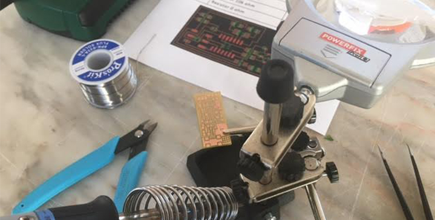

WEEK 4 (15 February 2017)
[Electronics Production]
This week The Electronics Production assignment is to mill a board,( hello.ISP.44.) and stuff it with components and programming it, this board ISP that we can use later on, for programming another boards.
Objectives
- Mill a Board
- Welding the components
- Programming the Board
Mill a Board (hello.ISP.44.)
We have in our Fablab a Roland MDX 40A milling machine.
We chose a FabISP circuit design from former FabAcademy students. My choice was hello.ISP.44 board.
First step: I downloaded the png files and saved them into a folder on the desktop.
With these files we went to the milling machine Roland MDX 40A at the Fab Lab, there It has a PC next to it from where we sent all the files and instructions. It is a little bit like that with almost every machine here at the lab.
Second step: I imported the png. image of the FabISP traces to the Fab Modules, selected the output: Roland mill (.rml); and the process: PCB traces (1/64).
Before creating the .rml file, the machine has to be ready. For that, it is important to put the board on the base. The acrilic base in the machine doesn't come with the Roland machine, but is there just in case the bits drill too deep so it damages the board and not the machine's original base. This is not a problem because the Z axis can be set at anytime. The board can also be positioned anywhere inside the area covered by the acrilic board, because the X and Y origin can also be reconfigured every time.
Third step: I set the correct values for the machine:
- Output: Machine: MDX40
- cut depth (mm): to 0,05mm;
- tool diameter (mm): 0,25 mm
- number of offsets (-1 to fill): 4
- offset overlap (%): 50%
Fourth step: I Pushed the button "calculate" to see the perview of the traces and downloaded de .rlm file in the G code.
Once the X and Y origin is set, the Z origin has to be set. This is done by pressing on the up and down arrows on the machine panel. Normally the bit will be above the desired level so we can press on the DOWN button, the bit will start rotating and approaching downwards very slowly... One has to be very precise but it can be seen when the bit touches the board because a little bit of dust is generated.
Then I imported the generated rml fille into the Roland V panel and "began milling"
Fifth step: "began milling" it takes about ten minutes to do all the traces! And after all the traces are done it's very dusty. Afterwards we were advised to never blow all the dust away because it can damage the engine! And also, once all the tracing is done, all the steps before have to be repeated but changing the configuration to 1/32 which is a bigger bit and pre-set to cut instead of tracing. The only one thing that one has to remember is the X,Y points from the settings before, especially if many boards were cut!
Sixth step: Finally we have all the student's boards from Fundão. We made four boards and, as I explained before, every step is almost the same in order to cut the board. Some configuration changes are needed and always remember the origin points! Once everything is cut you can TURN OFF THE MACHINE and then remove the board and the double sided tape from the bottom and we have a circuit!
My Board "T" (Toni Board)
The board was ready, the next step is to start looking for the components and to start soldering them. There are many things to bring together before starting to solder. A good light is very important, a comfortable space as well, and then, some tools: tweezers, a fine point soldering iron, the heater, a sponge, some masking tape, the solder, a Magnifying Glass , my board and the components. This is the set up I ended having and the components list:
-
1 ATTiny 44 microcontroller
-
1 Capacitor 1uF
-
2 Capacitor 10 pF
-
2 Resistor 100 ohm
-
1 Resistor 499 ohm
-
1 Resistor 1K ohm
-
1 Resistor 10K
-
One 6 pin header
-
USB connector
-
2 jumpers - 0 ohm resistors
-
1 Crystal 20MHz
-
two Zener Diode 3.3 V
-
one usb mini cable
-
one ribbon cable
-
two 6 pin connectors

After working on it patiently, the board was done! The most difficult parts were the micro-controller and the usb header.
When I went to test the board I noticed there was a problem, I have lost a resistor, and I had to weld a new one.
"Smoke Test"
I plugged the FabISP into my computer via the mini USB cable and I got a green light in the debugger. I also used the multimeter to confirm connectivity from all the traces of my board. The board confirmed the 5.volts, so it's ok to program.
The Board is complete!
Next step , we have to program our FABISP.
And these are the steps:
To program the FabISP, you first need to install the necessary software for your operating system and download the firmware
Edit the Makefile
Set the fuses / program the board
Verify that the board is working properly
Remove the jumpers and turn it into a programer
To Be Continued...